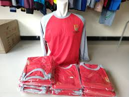

KERAJINAN
KONVEKSI
Mulai Rp 20.000 / Buah
Produk konveksi seperti baju, kaos, celana dan yang lain-lain bisa menghasilkan untung yang sangat tinggi.
Pesan via WhatsApp
PERIKANAN
BUDIDAYA IKAN
Rp 11.000 / Ekor
Budidaya ikan merupakan salah satu pilar ekonomi produktif yang dijalankan oleh masyarakat setempat.
Pesan via WhatsApp